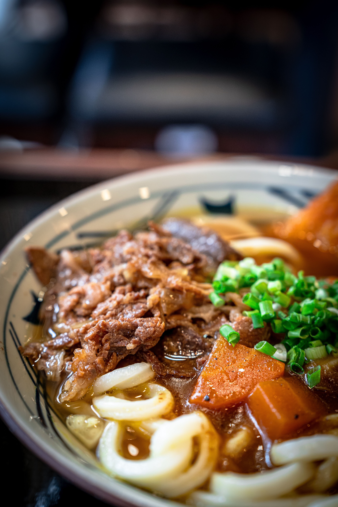

Home
Kitsune Udon

Ingredients
- kombu (dried kelp), water, and katsuobushi (dried bonito flakes) for the dashi
- dashi, mirin, sugar, salt, and usukuchi (light-colored) soy sauce
- Inari age (seasoned fried tofu pouch)
- green onion/scallion
- narutomaki (fish cakes) optional
- udon noodles
- shichimi togarashi (Japanese seven spice) optional
How to Make Kitsune Udon
- Make the homemade dashi
- Cook the udon broth
- Prepare the toppings.
- Boil the udon noodles
- Assemble the kitsune udon